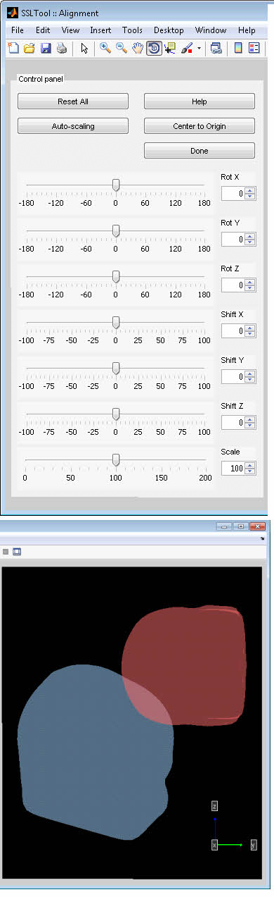
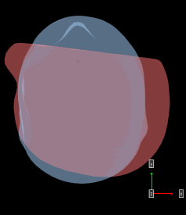
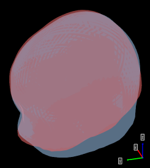
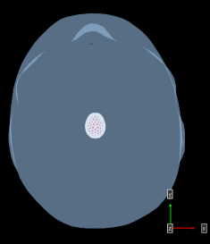
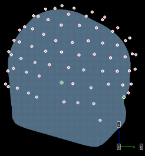
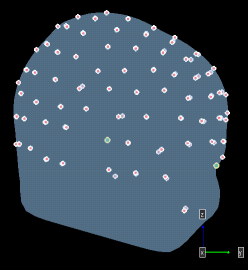

How to Make a Head Model SSLTool: A Matlab toolbox for EEG surface Laplacian Home | Download | Screenshots | Project detail
When you click the "Make Model" button on SSLTool main gui, a step-by-step guide is brought up to help you build your own head models.
STEP 1: Import and align a head mesh. The first step to create a new model is to import a triangular surface mesh of the head. SSLTool itself does not provide any mesh creation functionality, so you may need to use some third party software. For instance, the default model using in SSLTool was created using Brainvoyager. Another free alternative is to use the FSL tools. By default SSLTool supports 3 types of imports: an .OFF mesh file, a .SRF Brayvoyager mesh file and a workspace structure variable (with fields Vertex and Face). Note that inorder to import .SRF files you need to install BVQXTools Matlab toolbox first (see FAQ for details). To help you practice, an example OFF head file is included in the data folder. Import the SSL_HEAD_EXAMPLE.off file now. Suppose now you have the head mesh ready, the next step is to get it aligned to be compatible with SSLTool's internal coordinate frame. This step is crucial in that upon completion it guarantees SSLTool algorithms to work in the correct domain. The alignment user interface looks like this: 
Here the BLUE mesh is a default reference mesh, and the RED (target) mesh is the one imported by the user. The ui controls the rigid transformation of the red mesh. The goal is to manually align the red to the blue as close as possible. Note that the reference blue mesh is in a slightly "nodded" position, such that the nasion point is at about the same level of inion. This position maximizes the viewable scalp area when showing topographic plots on overhead views. If the target and reference are in very different positions, try to use the "Center to Origin" as well as "Auto Scale" to help precise alignment.  The above image showshow it looks like after clicking "Center to Origin" and "Auto Scale";
 And the final alignment should look something like the above image.
STEP 2: Import and align electrode coordinates. You can import form a text file, or a workspace variable. For this tutorial, import the SSL_ELECTRODE_EXAMPLE.txt in the data folder.  The imported electrodes looks tiny. Click "Auto Scale" to fix this.
 With some works, the final alignment looks like the above image. Before hitting "Done" you can choose to perform an automatic "Snap to mesh" process so that every electrodes resides precisely on the head mesh.  The electrodes are now snapped to mesh.
STEP 3: Save the model. The default save file is SSL_MODEL_CUSTOM.mat.
|
||